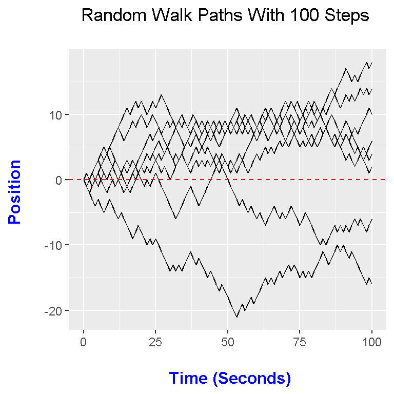
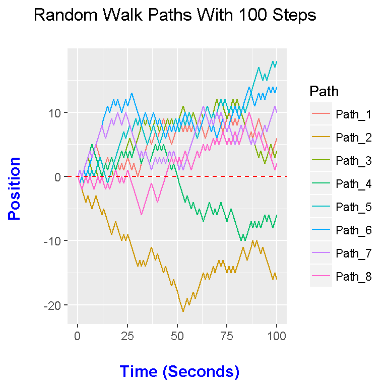
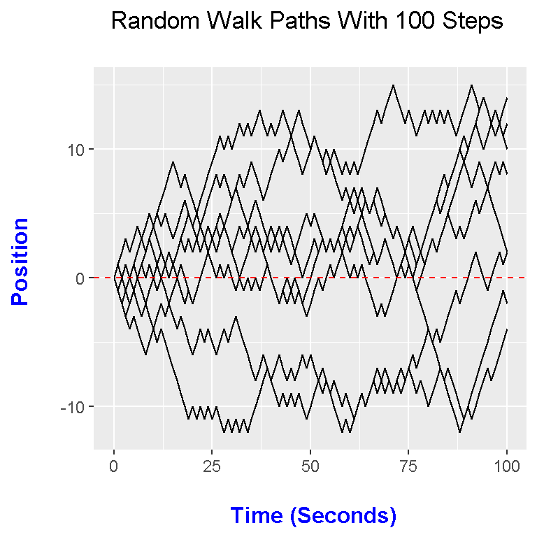
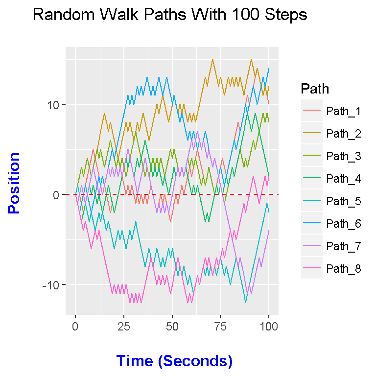

Hi there. This is a follow up to my page on Random Walks In R. The previous page was about generating a single random walk path and plotting it. In this page, the focus is on creating on multiple random walk paths.
Create one random walk path is not too bad. When it comes to simulating multiple random walk paths, it gets somewhat tricky.
I first initialize some values such as the time and the number of random walk paths I want to simulate. In this example, I choose 8 for num_paths.
I also initialize my matrix full of zeroes with the number of rows equal to the number of paths and the number of columns being the time + 1 (I have to include the time at t = 0).
Using a for loop, I simulate the positions at each time point for each path. The for loop will start with the first path and go through all the time points and then it goes to the second path and so on.
# Multiple Random Walk Paths:
# Resource: http://www.phytools.org/eqg/Exercise_4.1/
# https://stackoverflow.com/questions/17150183/plot-multiple-lines-in-one-graph
library(ggplot2)
# Using the cumsum() function to generate random walk more efficently:
time <- 100
num_paths <- 8
rw_paths <- matrix(data = 0, nrow = num_paths, ncol = time + 1)
# Fill rows with each random walk path realization:
for (i in 1:num_paths){
rw_paths[i, ] <- c(0, cumsum(sample(x = c(-1, 1), size = time, prob = c(0.5, 0.5), replace = TRUE)))
}
rw_paths <- data.frame(rw_paths)
# Check:
head(rw_paths)## X1 X2 X3 X4 X5 X6 X7 X8 X9 X10 X11 X12 X13 X14 X15 X16 X17 X18 X19 X20
## 1 0 -1 -2 -1 0 1 2 3 4 5 4 3 2 1 2 3 2 3 2 1
## 2 0 -1 -2 -3 -4 -3 -4 -5 -4 -3 -4 -5 -6 -5 -6 -7 -8 -9 -8 -7
## 3 0 -1 0 1 2 3 2 1 0 1 0 -1 0 1 0 -1 0 1 0 1
## 4 0 1 0 1 2 3 4 5 4 3 2 1 0 1 2 1 2 3 2 1
## 5 0 -1 0 -1 0 1 0 1 0 1 2 3 2 1 0 -1 0 1 2 3
## 6 0 -1 0 1 0 1 2 3 4 5 6 7 8 9 10 11 10 11 12 11
## X21 X22 X23 X24 X25 X26 X27 X28 X29 X30 X31 X32 X33 X34 X35 X36 X37 X38
## 1 2 1 2 1 2 3 2 1 2 1 0 1 2 3 4 5 6 5
## 2 -8 -9 -10 -9 -10 -9 -10 -11 -12 -13 -14 -13 -14 -13 -14 -13 -12 -11
## 3 2 3 4 3 4 5 6 5 4 5 6 7 8 9 8 9 8 7
## 4 2 3 4 3 4 3 4 3 4 5 4 3 2 3 4 3 2 3
## 5 4 5 6 7 6 7 8 7 8 9 8 9 8 7 6 5 6 7
## 6 12 11 10 11 12 11 12 13 12 11 10 9 8 9 10 9 8 9
## X39 X40 X41 X42 X43 X44 X45 X46 X47 X48 X49 X50 X51 X52 X53 X54 X55 X56
## 1 6 7 6 7 8 9 8 7 6 5 6 7 8 7 8 7 8 7
## 2 -12 -13 -12 -13 -14 -15 -14 -15 -16 -17 -16 -17 -18 -19 -20 -21 -20 -19
## 3 8 9 8 7 8 7 8 9 8 9 8 7 8 9 10 11 10 9
## 4 4 5 4 5 4 5 4 3 2 1 2 1 0 -1 -2 -3 -4 -3
## 5 8 7 6 5 6 7 6 7 8 7 8 9 8 7 8 9 8 9
## 6 10 9 8 9 8 7 6 7 8 7 8 7 8 9 8 9 10 9
## X57 X58 X59 X60 X61 X62 X63 X64 X65 X66 X67 X68 X69 X70 X71 X72 X73 X74
## 1 8 7 8 7 8 9 8 7 6 7 8 9 8 9 10 9 8 7
## 2 -20 -19 -18 -19 -18 -17 -16 -15 -16 -15 -16 -15 -14 -15 -14 -13 -14 -13
## 3 10 9 10 9 8 9 10 9 10 11 10 9 10 11 12 11 12 11
## 4 -4 -5 -4 -5 -6 -5 -6 -7 -6 -5 -4 -5 -6 -5 -6 -5 -4 -5
## 5 10 9 8 7 6 7 8 9 10 11 10 9 10 9 10 11 12 11
## 6 8 9 8 7 8 7 8 9 10 9 8 7 8 7 6 7 8 9
## X75 X76 X77 X78 X79 X80 X81 X82 X83 X84 X85 X86 X87 X88 X89 X90 X91 X92
## 1 8 9 10 9 8 9 8 9 10 9 8 7 6 7 6 7 8 9
## 2 -14 -15 -14 -15 -14 -15 -14 -13 -12 -11 -12 -13 -12 -11 -10 -11 -10 -11
## 3 10 9 10 11 12 11 12 11 10 9 8 7 6 5 6 5 4 3
## 4 -6 -7 -6 -5 -6 -7 -8 -9 -10 -9 -10 -9 -8 -7 -8 -7 -8 -7
## 5 12 11 10 11 10 11 10 11 10 11 10 11 12 13 14 15 16 17
## 6 8 7 8 9 10 11 10 9 10 11 12 13 14 13 12 11 12 13
## X93 X94 X95 X96 X97 X98 X99 X100 X101
## 1 8 7 6 5 4 3 4 5 6
## 2 -12 -11 -12 -13 -14 -15 -16 -15 -16
## 3 4 3 2 3 4 5 4 3 4
## 4 -8 -7 -6 -7 -6 -7 -8 -7 -6
## 5 16 15 16 15 16 17 18 17 18
## 6 12 13 12 13 14 13 14 13 14
From the check of head(rw_paths), we have a wide formatted data set:
# Check:
head(rw_paths)## X1 X2 X3 X4 X5 X6 X7 X8 X9 X10 X11 X12 X13 X14 X15 X16 X17 X18 X19 X20
## 1 0 -1 -2 -1 0 1 2 3 4 5 4 3 2 1 2 3 2 3 2 1
## 2 0 -1 -2 -3 -4 -3 -4 -5 -4 -3 -4 -5 -6 -5 -6 -7 -8 -9 -8 -7
## 3 0 -1 0 1 2 3 2 1 0 1 0 -1 0 1 0 -1 0 1 0 1
## 4 0 1 0 1 2 3 4 5 4 3 2 1 0 1 2 1 2 3 2 1
## 5 0 -1 0 -1 0 1 0 1 0 1 2 3 2 1 0 -1 0 1 2 3
## 6 0 -1 0 1 0 1 2 3 4 5 6 7 8 9 10 11 10 11 12 11
## X21 X22 X23 X24 X25 X26 X27 X28 X29 X30 X31 X32 X33 X34 X35 X36 X37 X38
## 1 2 1 2 1 2 3 2 1 2 1 0 1 2 3 4 5 6 5
## 2 -8 -9 -10 -9 -10 -9 -10 -11 -12 -13 -14 -13 -14 -13 -14 -13 -12 -11
## 3 2 3 4 3 4 5 6 5 4 5 6 7 8 9 8 9 8 7
## 4 2 3 4 3 4 3 4 3 4 5 4 3 2 3 4 3 2 3
## 5 4 5 6 7 6 7 8 7 8 9 8 9 8 7 6 5 6 7
## 6 12 11 10 11 12 11 12 13 12 11 10 9 8 9 10 9 8 9
## X39 X40 X41 X42 X43 X44 X45 X46 X47 X48 X49 X50 X51 X52 X53 X54 X55 X56
## 1 6 7 6 7 8 9 8 7 6 5 6 7 8 7 8 7 8 7
## 2 -12 -13 -12 -13 -14 -15 -14 -15 -16 -17 -16 -17 -18 -19 -20 -21 -20 -19
## 3 8 9 8 7 8 7 8 9 8 9 8 7 8 9 10 11 10 9
## 4 4 5 4 5 4 5 4 3 2 1 2 1 0 -1 -2 -3 -4 -3
## 5 8 7 6 5 6 7 6 7 8 7 8 9 8 7 8 9 8 9
## 6 10 9 8 9 8 7 6 7 8 7 8 7 8 9 8 9 10 9
## X57 X58 X59 X60 X61 X62 X63 X64 X65 X66 X67 X68 X69 X70 X71 X72 X73 X74
## 1 8 7 8 7 8 9 8 7 6 7 8 9 8 9 10 9 8 7
## 2 -20 -19 -18 -19 -18 -17 -16 -15 -16 -15 -16 -15 -14 -15 -14 -13 -14 -13
## 3 10 9 10 9 8 9 10 9 10 11 10 9 10 11 12 11 12 11
## 4 -4 -5 -4 -5 -6 -5 -6 -7 -6 -5 -4 -5 -6 -5 -6 -5 -4 -5
## 5 10 9 8 7 6 7 8 9 10 11 10 9 10 9 10 11 12 11
## 6 8 9 8 7 8 7 8 9 10 9 8 7 8 7 6 7 8 9
## X75 X76 X77 X78 X79 X80 X81 X82 X83 X84 X85 X86 X87 X88 X89 X90 X91 X92
## 1 8 9 10 9 8 9 8 9 10 9 8 7 6 7 6 7 8 9
## 2 -14 -15 -14 -15 -14 -15 -14 -13 -12 -11 -12 -13 -12 -11 -10 -11 -10 -11
## 3 10 9 10 11 12 11 12 11 10 9 8 7 6 5 6 5 4 3
## 4 -6 -7 -6 -5 -6 -7 -8 -9 -10 -9 -10 -9 -8 -7 -8 -7 -8 -7
## 5 12 11 10 11 10 11 10 11 10 11 10 11 12 13 14 15 16 17
## 6 8 7 8 9 10 11 10 9 10 11 12 13 14 13 12 11 12 13
## X93 X94 X95 X96 X97 X98 X99 X100 X101
## 1 8 7 6 5 4 3 4 5 6
## 2 -12 -11 -12 -13 -14 -15 -16 -15 -16
## 3 4 3 2 3 4 5 4 3 4
## 4 -8 -7 -6 -7 -6 -7 -8 -7 -6
## 5 16 15 16 15 16 17 18 17 18
## 6 12 13 12 13 14 13 14 13 14
Instead of this wide format, I would like the time points as rows and the paths going down by column. In R, I add a time = 0 column and I transpose this wide format into a long format. (Transpose comes from linear algebra which means to switch rows with columns and vice versa.)
# Transpose and add times column (Transpose = switch rows with columns and viceversa):
rw_paths_t <- cbind(Time = 0:time, t(rw_paths))
head(rw_paths_t)## Time
## X1 0 0 0 0 0 0 0 0 0
## X2 1 -1 -1 -1 1 -1 -1 1 -1
## X3 2 -2 -2 0 0 0 0 0 -2
## X4 3 -1 -3 1 1 -1 1 1 -1
## X5 4 0 -4 2 2 0 0 2 0
## X6 5 1 -3 3 3 1 1 3 -1
The columns after Time have no titles. This can be fixed easily. I also remove the row names with the X1, X2, etc.
# Rename columns: Each column represents the path and the values are the positions at time t:
for (i in 1:num_paths){
colnames(rw_paths_t)[i + 1] <- paste0("Path_", i)
}
# Remove row names, have them blank
rownames(rw_paths_t) <- NULL
# Convert to data.frame for gather().
rw_paths_t <- data.frame(rw_paths_t)
Here is another check.
head(rw_paths_t)## Time Path_1 Path_2 Path_3 Path_4 Path_5 Path_6 Path_7 Path_8
## 1 0 0 0 0 0 0 0 0 0
## 2 1 -1 -1 -1 1 -1 -1 1 -1
## 3 2 -2 -2 0 0 0 0 0 -2
## 4 3 -1 -3 1 1 -1 1 1 -1
## 5 4 0 -4 2 2 0 0 2 0
## 6 5 1 -3 3 3 1 1 3 -1
This table looks nice and can be easily read. The downside of it is that it’s not usable for plotting in ggplot2. I want to reformat the data from a wide format to a long format where I have a column stating which path the position value goes with at each time point.
To do this, I use tidyr. (dplyr is used for the %>% pipe operator).
# Wide Format To Long Format Data:
library(tidyr)
library(dplyr)##
## Attaching package: 'dplyr'## The following object is masked from 'package:MASS':
##
## select## The following objects are masked from 'package:stats':
##
## filter, lag## The following objects are masked from 'package:base':
##
## intersect, setdiff, setequal, unionrw_paths2 <- rw_paths_t %>% gather(Path, Position, -Time)
# Check:
head(rw_paths2)## Time Path Position
## 1 0 Path_1 0
## 2 1 Path_1 -1
## 3 2 Path_1 -2
## 4 3 Path_1 -1
## 5 4 Path_1 0
## 6 5 Path_1 1
In the gather() function from tidyr, I leave the time column alone. The Path_1, Path_2 up to Path_8 column names are now values under the new Path column. The values under Path_1, Path_2 up to Path_8 are now values in this new column called Position. These values correspond to the Path value and to the time point.
After generating our random walk paths and data formatting, the random walk paths can be plotted in R with ggplot2.
# Ggplot with time on horizontal axis, and running total/position on vertical axis.
ggplot(rw_paths2, aes(x = Time, y = Position, group = Path)) +
geom_line() +
labs(x = "\n Time (Seconds)", y = "Position \n", title = paste0("Random Walk Paths With ", time, " Steps \n")) +
theme(plot.title = element_text(hjust = 0.5),
axis.title.x = element_text(face="bold", colour="blue", size = 12),
axis.title.y = element_text(face="bold", colour="blue", size = 12)) +
geom_hline(yintercept = 0, colour = "red", linetype = "dashed")
For different coloured paths add in colour = Path in the aes() part in ggplot().
# If I want different colours for each path I would add colour = Path in aes().
ggplot(rw_paths2, aes(x = Time, y = Position, group = Path, colour = Path)) +
geom_line() +
labs(x = "\n Time (Seconds)", y = "Position \n", title = paste0("Random Walk Paths With ", time, " Steps \n")) +
theme(plot.title = element_text(hjust = 0.5),
axis.title.x = element_text(face="bold", colour="blue", size = 12),
axis.title.y = element_text(face="bold", colour="blue", size = 12)) +
geom_hline(yintercept = 0, colour = "red", linetype = "dashed")
Instead of using a for loop for generating multiple random walk paths, the replicate() function can be used.
To show how replicate() works, here is an example. I use the replicate() function to simulate 8 standard uniform random variables 10 times.
Each of the ten replications are in columns.
The R code for multiple random walks is pretty similar to the one in the previous section. The for loop section has been modified for the replicate() function.
# Replicate example: replicate(n = 10, runif(n = 8))
# Replicate function version:
library(ggplot2)
# Using the cumsum() function to generate random walk more efficently:
time <- 100
num_paths <- 8
rw_paths <- matrix(data = 0, nrow = time + 1, ncol = num_paths)
# Fill rows with each random walk path realization with replicate():
rw_paths <- replicate(num_paths, c(0, cumsum(sample(x = c(-1, 1), size = time, prob = c(0.5, 0.5), replace = TRUE))))
rw_paths <- data.frame(rw_paths)
# Check:
head(rw_paths)## X1 X2 X3 X4 X5 X6 X7 X8
## 1 0 0 0 0 0 0 0 0
## 2 1 -1 1 -1 1 -1 -1 -1
## 3 0 0 2 -2 0 -2 0 -2
## 4 -1 -1 3 -3 1 -1 1 -3
## 5 0 -2 2 -2 0 0 0 -4
## 6 1 -1 3 -1 -1 1 -1 -3# Add times column (No need to transpose here):
rw_paths <- cbind(Time = 0:time, rw_paths)
head(rw_paths)## Time X1 X2 X3 X4 X5 X6 X7 X8
## 1 0 0 0 0 0 0 0 0 0
## 2 1 1 -1 1 -1 1 -1 -1 -1
## 3 2 0 0 2 -2 0 -2 0 -2
## 4 3 -1 -1 3 -3 1 -1 1 -3
## 5 4 0 -2 2 -2 0 0 0 -4
## 6 5 1 -1 3 -1 -1 1 -1 -3
The neat part with replicate is that there is no need to transpose this time around. Here is the rest of the code before plotting. (This code section is pretty much the same as before.)
# Rename columns: p_t which is position at time t.
for (i in 1:num_paths){
colnames(rw_paths)[i + 1] <- paste0("Path_", i)
}
# Remove row names, have them blank
rownames(rw_paths) <- NULL
# Convert to data.frame for gather().
rw_paths <- data.frame(rw_paths)
# Wide Format To Long Format Data:
library(tidyr)
library(dplyr)
rw_paths2 <- rw_paths %>% gather(Path, Position, -Time)
# Check:
head(rw_paths2)## Time Path Position
## 1 0 Path_1 0
## 2 1 Path_1 1
## 3 2 Path_1 0
## 4 3 Path_1 -1
## 5 4 Path_1 0
## 6 5 Path_1 1tail(rw_paths2)## Time Path Position
## 803 95 Path_8 -1
## 804 96 Path_8 0
## 805 97 Path_8 1
## 806 98 Path_8 2
## 807 99 Path_8 1
## 808 100 Path_8 2dim(rw_paths2)## [1] 808 3
Here is the code and output of the plots.
# Ggplot with time on horizontal axis, and running total/position on vertical axis.
ggplot(rw_paths2, aes(x = Time, y = Position, group = Path)) +
geom_line() +
labs(x = "\n Time (Seconds)", y = "Position \n", title = paste0("Random Walk Paths With ", time, " Steps \n")) +
theme(plot.title = element_text(hjust = 0.5),
axis.title.x = element_text(face="bold", colour="blue", size = 12),
axis.title.y = element_text(face="bold", colour="blue", size = 12)) +
geom_hline(yintercept = 0, colour = "red", linetype = "dashed")
# If I want different colours for each path I would add colour = Path in aes().
ggplot(rw_paths2, aes(x = Time, y = Position, group = Path, colour = Path)) +
geom_line() +
labs(x = "\n Time (Seconds)", y = "Position \n", title = paste0("Random Walk Paths With ", time, " Steps \n")) +
theme(plot.title = element_text(hjust = 0.5),
axis.title.x = element_text(face="bold", colour="blue", size = 12),
axis.title.y = element_text(face="bold", colour="blue", size = 12)) +
geom_hline(yintercept = 0, colour = "red", linetype = "dashed")